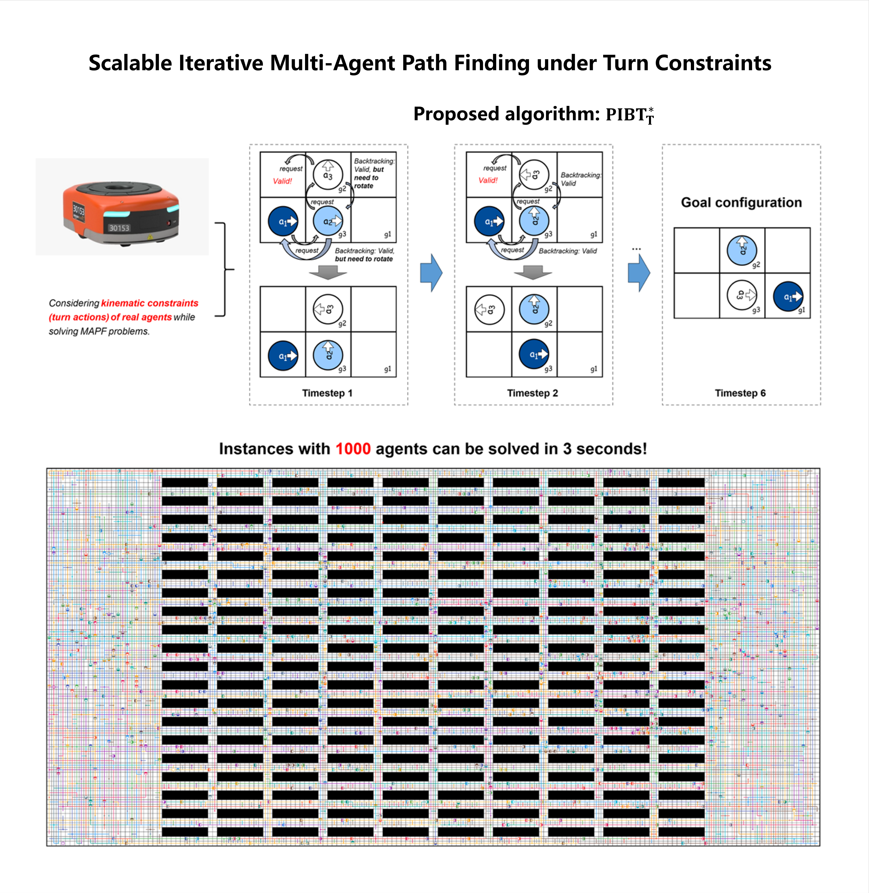
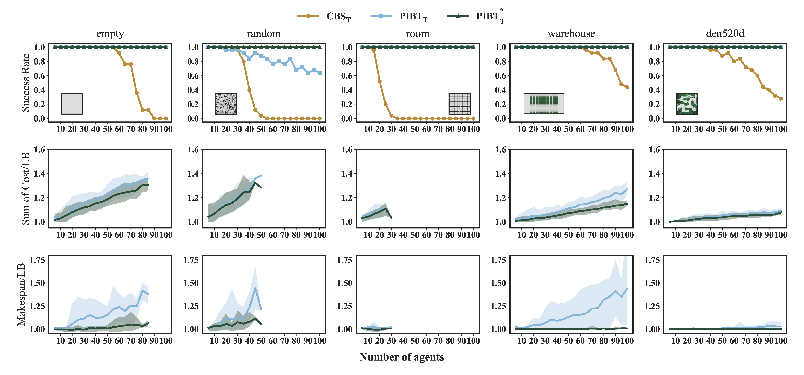
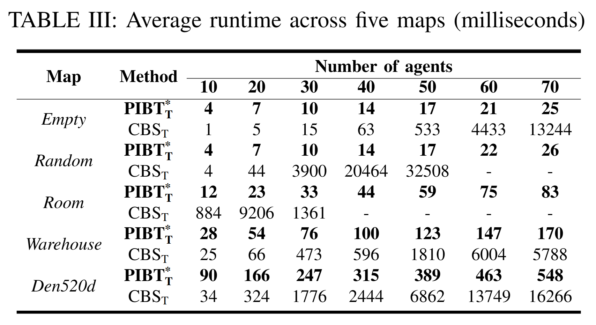
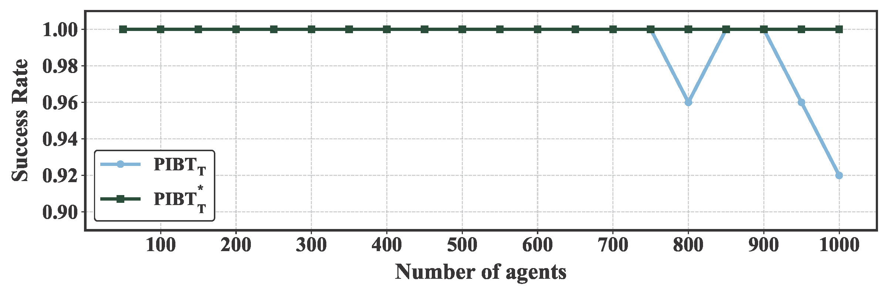
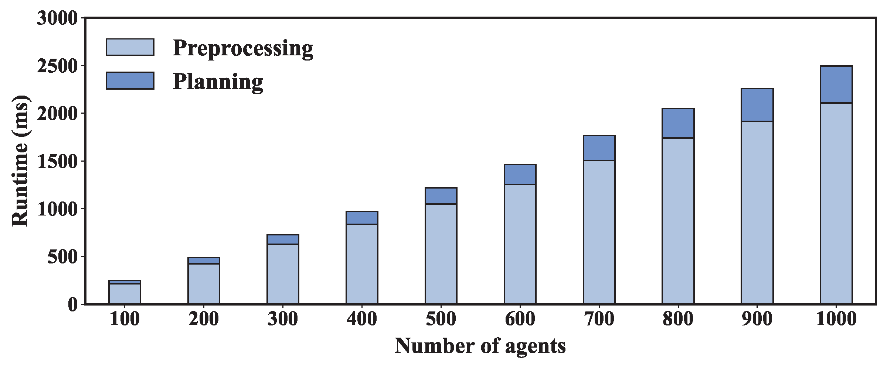
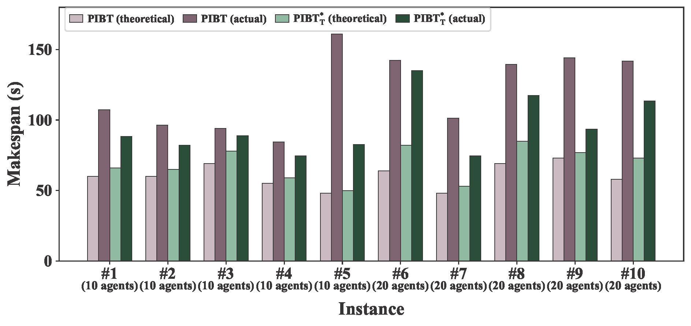

Multi-Agent Path Finding with turn actions (MAPFT) enables more realistic planning for mobile robots by explicitly modeling orientation changes and turn delays. However, these turn constraints enlarge the state space and break the immediate node-vacation assumption behind classical iterative solvers, posing major challenges to real-time planning in large-scale systems. This paper proposes an efficient iterative solver that extends priority inheritance with backtracking to MAPFT. The method preserves the lightweight single-timestep planning mechanism of PIBT while introducing turn-aware action updates and dedicated mechanisms for handling cyclic dependencies, deadlocks, and inefficient repeated pushing. Experimental results on standard MAPF benchmarks show that PIBTT* substantially improves runtime and scalability over existing MAPFT solvers, and solves instances with up to 1,000 agents within seconds. A realistic flexible manufacturing system case study further shows that, compared with classical MAPF planners that ignore turn actions, the proposed method not only yields plans whose estimated costs better match actual execution, but also achieves lower actual execution cost.
In warehouse logistics and manufacturing transport systems, mobile robots often need to rotate in place before moving in the desired direction. If this turning overhead is ignored during planning, the resulting schedules can be overly optimistic and may not match actual execution well. The method proposed in this paper incorporates turn costs directly into the planning stage, producing routes that better reflect the kinematic behavior of real robots. This reduces the mismatch between planned and actual execution and can also lower the actual execution cost compared with classical MAPF plans that ignore turn actions. The method is computationally efficient and can generate coordinated plans for hundreds of robots within milliseconds, making it suitable for dense and dynamic environments that require frequent replanning. It is particularly relevant to automated warehouses, flexible manufacturing systems, and related multi-robot transport scenarios where turning delays cannot be neglected.




